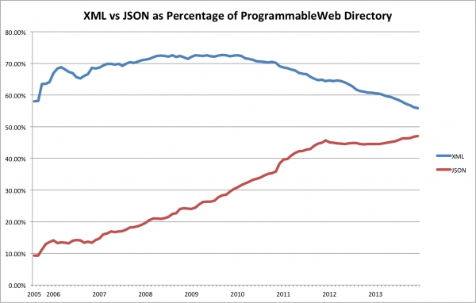

All About JSON
JSON
What is JSON?
- JSON stands for JavaScript Object Notation
- JSON is a lightweight data-interchange format
- JSON is "self-describing" and easy to understand(as said by many)
- JSON is language independent *
JSON - Introduction|W3schools.org
JSON is easy for humans as well as machines to edit. It is based on a subset of the JavaScript Programming Language, Standard ECMA-262 3rd Edition - December 1999. JSON is a text format that is completely language independent (any language can be used to phrase data into json format) but uses conventions that are familiar to programmers of the C-family of languages, including C, C++, C#, Java, JavaScript, Perl, Python, and many others. These properties make JSON an ideal data-interchange language. [1]
History of JSON
JSON grew out of a need for stateful, real-time server-to-browser communication protocol without using browser plugins such as Flash or Java applets, the dominant methods used in the early 2000s. [2]
Douglas Crockford was [3] the first to specify and popularize the JSON format. The acronym was coined at State Software, a company co-founded by Crockford, Chip Morningstar and Robert F. Napiltonia in April 2001 and funded by Tesla Ventures.
These are universal data structures. Virtually it is supported by all mordern programming languages such as python, ruby, c, c++, c#, java, and many more! in one form or other. It makes sense that a data format that is interchangeable with programming languages also be based on these structures. [4]
The other technologies that were used prior to the invention of json were
- xml
- flash by Adobe
- java applets
- ... and the list goes on
So i have put together the comparison between json and the most commmonly used technology named XML
JSON v/s XML
This table represents the major differences between Javascript Object Notation and XML
| JavaScript Object Notation (JSON) | Xtensible Markup Language (XML) | |
|---|---|---|
| Document Markup Language | NO | YES |
| Schema | NO | YES |
| Includes namespaces | NO | YES |
| maps directly to object models | YES | NO |
| Verbose | LESS | MORE |
